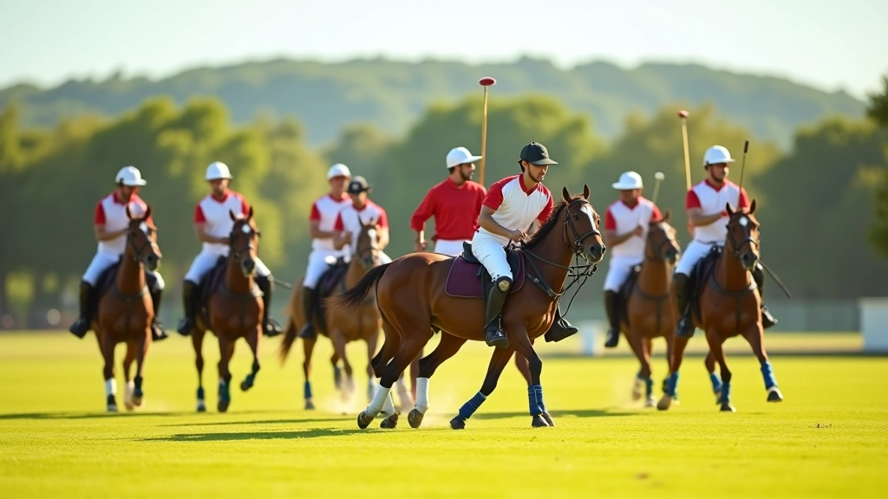

كيف بدأنا وأين وصلنا
البولو ليست مجرد رياضة. إنها مزيج معقد من الاستراتيجية والتنسيق والمهارة البدنية. لاحظنا أن الكثير من البرامج التدريبية تركز على الأساليب التقليدية دون شرح الحقائق الفعلية. كان لدينا فكرة بسيطة: تدريب حقيقي مع شرح واضح لكل خطوة.
بدأنا نادي الفرسان للبولو بفريق صغير من المدربين الذين لعبوا على مستويات عالية. على مدار السنوات، عملنا مع لاعبين من مستويات مختلفة وتمكنّا من تطوير مهاراتهم بشكل ملموس. الشيء المهم؟ كل واحد تحسن فعلاً. ليس لدينا أرقام مبالغ فيها — فقط نتائج يراها الآباء والأمهات كل أسبوع.
اليوم، نحن نقدم برامج منظمة حسب الفئة العمرية مع التركيز على أساسيات البولو وتمارين التنسيق الجماعي. مدربونا يعملون بصبر مع كل لاعب. لا يوجد سباق نحو النتائج السريعة. يوجد فقط تحسن حقيقي ومستقر.
